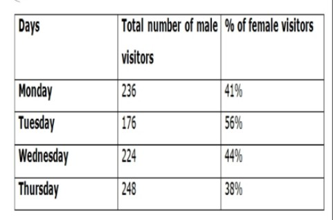

धारा के अनुकूल नाव की गति और धारा की गति का अनुपात 9:1 है, यदि धारा की गति 3 किमी प्रति घंटा है, तो धारा के प्रतिकूल 5 घंटे में तय की गई दूरी (किमी में) ज्ञात कीजिए। A) 105 B) 110 C) 120 D) 90 E) 95 .
37.4 लगातार सम संख्याओं का योग तीन लगातार विषम संख्याओं से 81 अधिक है। यदि सबसे कम विषम और सबसे कम सम संख्याओं का योग 59 है, तो सबसे बड़ी विषम और सबसे बड़ी सम संख्याओं का योग ज्ञात करें। A) 69 B) 71 C) 73 D) 67 E) 79 .
दो अलग-अलग राशियाँ दो योजनाओं में निवेश की जाती हैं। योजना A में, राशि X को 8% प्रति वर्ष की दर से निवेश किया जाता है योजना B में राशि (X+1400) 12% प्रति वर्ष की दर से निवेश की जाती है। 2 वर्षों के बाद दोनों योजनाओं से प्राप्त ब्याज के बीच का अंतर 880 है, तो X का मूल्य ज्ञात करें? A) 7200 B) 5500 C) 6800 D) 7300 E) 7000 .
निर्देश:(39-43 निम्नलिखित जानकारी का ध्यानपूर्वक अध्ययन करें और नीचे दिए गए प्रश्नों के उत्तर दें। दी गई तालिका चार अलग-अलग दिनों में एक पार्क में पुरुष आगंतुकों की संख्या और महिला आगंतुकों का प्रतिशत दर्शाती है।  सोमवार और गुरुवार को पार्क में आगंतुकों की कुल संख्या के बीच का अंतर कितना है? A) 50. B) 80 C) 100 D) 120 E) इनमें से कोई नहीं .
निर्देश:(39-43 निम्नलिखित जानकारी का ध्यानपूर्वक अध्ययन करें और नीचे दिए गए प्रश्नों के उत्तर दें। दी गई तालिका चार अलग-अलग दिनों में एक पार्क में पुरुष आगंतुकों की संख्या और महिला आगंतुकों का प्रतिशत दर्शाती है। एकसाथ मंगलवार और बुधवार को पार्क में कुल पुरुष आगंतुकों की संख्या में से, 45% आगंतुक चेन्नई से आते हैं। मंगलवार और बुधवार को एकसाथ चेन्नई से आए पुरुष आगंतुकों की संख्या और मंगलवार को पार्क में आगंतुकों की कुल संख्या के बीच का अंतर ज्ञात कीजिए ? A)220 B) 240 C) 260 D) 280 E) 300 .
निर्देश:(39-43 निम्नलिखित जानकारी का ध्यानपूर्वक अध्ययन करें और नीचे दिए गए प्रश्नों के उत्तर दें। दी गई तालिका चार अलग-अलग दिनों में एक पार्क में पुरुष आगंतुकों की संख्या और महिला आगंतुकों का प्रतिशत दर्शाती है। यदि शनिवार को पार्क में महिला आगंतुकों की संख्या, एक साथ सोमवार और मंगलवार को आगंतुकों की संख्या से 292 अधिक है, लेकिन शनिवार को पार्क में पुरुष आगंतुकों की संख्या से 120 कम है। तो शनिवार को पार्क में पुरुष आगंतुकों की संख्या ज्ञात कीजिए? A) 700 B) 800 C) 750 D) 850 E) 900 .
निर्देश:(39-43 निम्नलिखित जानकारी का ध्यानपूर्वक अध्ययन करें और नीचे दिए गए प्रश्नों के उत्तर दें। दी गई तालिका चार अलग-अलग दिनों में एक पार्क में पुरुष आगंतुकों की संख्या और महिला आगंतुकों का प्रतिशत दर्शाती है। रविवार को पार्क में पुरुष आगंतुकों की संख्या, गुरुवार को पार्क में आगंतुकों की कुल संख्या का 80% है और शुक्रवार को महिला आगंतुकों की संख्या, बुधवार की तुलना में 25% अधिक है। रविवार को पुरुष आगंतुकों और शुक्रवार को महिला आगंतुकों की संख्या के बीच का अंतर ज्ञात कीजिए ? A) 100 B) 120 C) 150 D) 180 E) 200 .
निर्देश:(39-43 निम्नलिखित जानकारी का ध्यानपूर्वक अध्ययन करें और नीचे दिए गए प्रश्नों के उत्तर दें। दी गई तालिका चार अलग-अलग दिनों में एक पार्क में पुरुष आगंतुकों की संख्या और महिला आगंतुकों का प्रतिशत दर्शाती है। यदि शुक्रवार को आगंतुकों की संख्या, एक साथ सभी चार दिनों में महिला आगंतुकों की औसत संख्या से एक अधिक है, और शुक्रवार को पुरुष आगंतुकों की संख्या समान दिन में महिला आगंतुकों की संख्या का 80% है। तो शुक्रवार से सोमवार को पुरुष आगंतुकों की संख्या का अनुपात ज्ञात कीजिए? A) 20:57 B) 21:59 C) 20:59 D) 7:19 E) इनमें से कोई नहीं .
दिशानिर्देश (44-48): निम्नलिखित संख्या में प्रश्न चिह्न (?) के स्थान पर क्या आना चाहिए। शृंखला? 255, 230, 250, 235, 245, ? A) 245 B) 240 C) 225 D) 260 E) 265 .
दिशानिर्देश (44-48): निम्नलिखित संख्या में प्रश्न चिह्न (?) के स्थान पर क्या आना चाहिए। शृंखला? 5, 3.5, 5, ?, 21.5, 56.75 A) 7.5 B) 8.5 C) 9.5 D) 10.5 E) 9 .
दिशानिर्देश (44-48): निम्नलिखित संख्या में प्रश्न चिह्न (?) के स्थान पर क्या आना चाहिए। शृंखला? 8, 4, 4, 8, 32, ? A) 512 B) 128 C) 248 D) 256 E) 232 .
दिशानिर्देश (44-48): निम्नलिखित संख्या में प्रश्न चिह्न (?) के स्थान पर क्या आना चाहिए। शृंखला? 129, 128, 124, 115, ?, 74 A) 99 B) 98 C) 101 D) 97 E) 103 .
दिशानिर्देश (44-48): निम्नलिखित संख्या में प्रश्न चिह्न (?) के स्थान पर क्या आना चाहिए। शृंखला? 0.5, 1.5, 5, 18, 76, ? A) 380 B) 385 C) 390 D) 375 E) 395 .
दो वर्ष पहले A और B की औसत आयु 26 वर्ष थी। यदि पांच वर्ष बाद A की आयु 40 वर्ष होगी और B, C से 5 वर्ष छोटा है। A और C की आयु के बीच अंतर ज्ञात कीजिए? A) 8 years B) 10 years C) 9 years D) 12 years E) 6 years .
दो वस्तुओं का लागत मूल्य समान है। दुकानदार को मिला पहली वस्तु पर 40% का लाभ, यदि दूसरी वस्तु का विक्रय मूल्य पहली वस्तु के विक्रय मूल्य से 25% कम है, तो दोनों वस्तुओं पर कुल लाभ प्रतिशत ज्ञात कीजिए। A) 23% B) 12 ½% C) 5% D) 22 ½% E) 27(1/2)% .
आयत की लंबाई वर्ग के विकर्ण का 80% है, जिसका क्षेत्रफल 1225 है, तो आयत का क्षेत्रफल ज्ञात करें यदि इसकी परिधि 94√2 है। A) 1016 B) 500 C) 1604 D) 1064 E) 625 .
अरुण की सालाना सैलरी 7.68 लाख है. एक महीने में अगर वह अपने मासिक वेतन से 12000 रुपये अपने बच्चों पर, बाकी का 1/13वां हिस्सा भोजन पर और 8000 रुपये म्यूचुअल फंड में खर्च करता है, तो उसके पास बची हुई मासिक बचत ज्ञात कीजिए। A)40,000 B) 45,000 C) 50,000 D) 36,000 E) 38000 .
निर्देश (54-68): सरलीकरण समस्याओं के बाद प्रश्न चिह्न (?) के स्थान पर क्या आना चाहिए? 40% 𝑜𝑓 ( 20/4 ×? ) = 48 A) 20 B) 24 C) 28 D) 32 E) 22 .
निर्देश (54-68): सरलीकरण समस्याओं के बाद प्रश्न चिह्न (?) के स्थान पर क्या आना चाहिए? (2.5 + 1.5) (3.5 + 1.5) = ? A) 15 B) 30 C) 20 D) 24 E) 20.5 .
निर्देश (54-68): सरलीकरण समस्याओं के बाद प्रश्न चिह्न (?) के स्थान पर क्या आना चाहिए? 40 × 64 ÷ 80 = ?² + 7 A) 5 B) 6 C) 7 D) 4 E) 2 .
निर्देश (54-68): सरलीकरण समस्याओं के बाद प्रश्न चिह्न (?) के स्थान पर क्या आना चाहिए? 25% of 16 × (15 - ?)³ = 256 A) 15 B) 13 C) 9 D) 11 E) 7 .
निर्देश (54-68): सरलीकरण समस्याओं के बाद प्रश्न चिह्न (?) के स्थान पर क्या आना चाहिए? 90 = 15% of 1000 × 3% of (100/?) A) 4 B) 5 C) 7 D) 9 E) 3 .
निर्देश (54-68): सरलीकरण समस्याओं के बाद प्रश्न चिह्न (?) के स्थान पर क्या आना चाहिए? ? + 7² = (7 × 4) + (43 × 5) A) 192 B) 194 C) 196 D) 198 E) 200 .
निर्देश (54-68): सरलीकरण समस्याओं के बाद प्रश्न चिह्न (?) के स्थान पर क्या आना चाहिए? 3(1/3) − ? × 3^2 /2^3 = 2(5/6) A) 2/3 B) 2/9 C) 4/9 D) 9/4 E) 7/9 .
निर्देश (54-68): सरलीकरण समस्याओं के बाद प्रश्न चिह्न (?) के स्थान पर क्या आना चाहिए? 40% of (102 ÷ 17) × ? = 2³ × 6 A) 20 B) 22 C) 25 D) 30 E) 15 .
निर्देश (54-68): सरलीकरण समस्याओं के बाद प्रश्न चिह्न (?) के स्थान पर क्या आना चाहिए? ? – 2³ = (7² - 12) + (10² - 17) A) 132 B) 126 C) 124 D) 128 E) 130 .
निर्देश (54-68): सरलीकरण समस्याओं के बाद प्रश्न चिह्न (?) के स्थान पर क्या आना चाहिए? 400% of ? = (13 × 15) – (891 ÷ 9) A) 20 B) 24 C) 22 D) 28 E) 18 .
निर्देश (54-68): सरलीकरण समस्याओं के बाद प्रश्न चिह्न (?) के स्थान पर क्या आना चाहिए? 8² × 8² = 2? × 26 × 24 A) 1 B) 3 C) 2 D) 0 E) 4 .
निर्देश (54-68): सरलीकरण समस्याओं के बाद प्रश्न चिह्न (?) के स्थान पर क्या आना चाहिए? 20% of (2² × 3²) – 2 = ? A) 2.5 B) 5.2 C) 5.4 D) 5.6 E) 6.2 .
निर्देश (54-68): सरलीकरण समस्याओं के बाद प्रश्न चिह्न (?) के स्थान पर क्या आना चाहिए? 20% 𝑜𝑓 1/5 𝑜𝑓 2250 = 50 + ? A) 55 B) 90 C) 50 D) 40 E) 45 .
निर्देश (54-68): सरलीकरण समस्याओं के बाद प्रश्न चिह्न (?) के स्थान पर क्या आना चाहिए? 986 – 432 + 116 = ? + (13)^2 A) 501 B) 505 C) 401 D) 451 E) None of these .
निर्देश (54-68): सरलीकरण समस्याओं के बाद प्रश्न चिह्न (?) के स्थान पर क्या आना चाहिए? 14.2% of 11000 + 15.6% of ? = 3590 A) 12000 B) 13000 C) 14560 D) 12250 E) 13500 .
A एक काम को 24 दिनों में कर सकता है, B, A से 20% अधिक कुशल है, यदि C उस काम को B से 10 दिन अधिक में कर सकता है, तो A और C द्वारा मिलकर उस काम को पूरा करने में लगे दिन ज्ञात कीजिए। A) 20/3 day B) 44/3 days C) 40/3 day D) 6 days E) 46/3 𝑑𝑎ys .
दूध और पानी का अनुपात 5:4 है, यदि दो लीटर पानी मिलाया जाए तो अनुपात 10:9 हो जाता है, तो मिश्रण में पानी की नई मात्रा ज्ञात कीजिए।>
एक दुकानदार सप्ताह के अलग-अलग दिनों में दो प्रकार के प्रिंटर अर्थात इंकजेट और लेजर बेचता है। नीचे दिया गया पाई चार्ट संबंधित दिनों में बेचे गए प्रिंटर की कुल संख्या का वितरण प्रतिशत या डिग्री माप में या वास्तविक मूल्य में दर्शाता है।
एक दुकानदार सप्ताह के अलग-अलग दिनों में दो प्रकार के प्रिंटर अर्थात इंकजेट और लेजर बेचता है। नीचे दिया गया पाई चार्ट संबंधित दिनों में बेचे गए प्रिंटर की कुल संख्या का वितरण प्रतिशत या डिग्री माप में या वास्तविक मूल्य में दर्शाता है।
एक दुकानदार सप्ताह के अलग-अलग दिनों में दो प्रकार के प्रिंटर अर्थात इंकजेट और लेजर बेचता है। नीचे दिया गया पाई चार्ट संबंधित दिनों में बेचे गए प्रिंटर की कुल संख्या का वितरण प्रतिशत या डिग्री माप में या वास्तविक मूल्य में दर्शाता है।
एक दुकानदार सप्ताह के अलग-अलग दिनों में दो प्रकार के प्रिंटर अर्थात इंकजेट और लेजर बेचता है। नीचे दिया गया पाई चार्ट संबंधित दिनों में बेचे गए प्रिंटर की कुल संख्या का वितरण प्रतिशत या डिग्री माप में या वास्तविक मूल्य में दर्शाता है।
एक दुकानदार सप्ताह के अलग-अलग दिनों में दो प्रकार के प्रिंटर अर्थात इंकजेट और लेजर बेचता है। नीचे दिया गया पाई चार्ट संबंधित दिनों में बेचे गए प्रिंटर की कुल संख्या का वितरण प्रतिशत या डिग्री माप में या वास्तविक मूल्य में दर्शाता है।